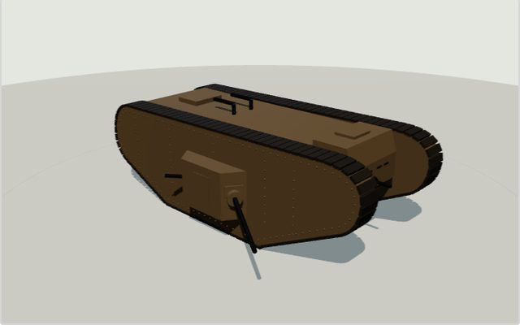
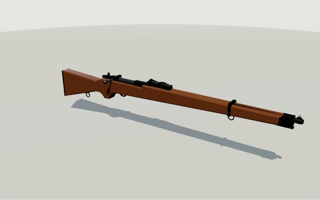
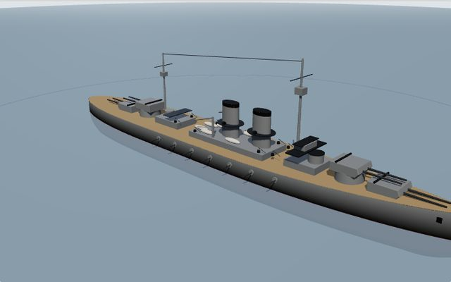

Am Anfang steht der Schützengraben: die Stellung, in der der Krieg an der Westfront ab Herbst 1914 erstarrte. Darauf folgen ein Flugzeug, ein Panzer, ein Gewehr und ein Kriegsschiff. Jedes Modell lässt sich drehen und aus festen Blickwinkeln ansehen. Zu jedem stehen der Belegstand und der Weg zur Seite, auf der es eingeordnet ist.
Die Modelle laden erst, wenn du auf „3D-Modell laden“ oder „3D-Modell öffnen“ tippst. Beim ersten Modell kommt die 3D-Bibliothek three.js dazu. Alle Modelle sind vereinfachte Nachbildungen, keine maßstabsgetreuen Rekonstruktionen.
Schematische Rekonstruktion eines ausgebauten deutschen Schützengrabens an der Westfront, gebaut nach dem Handbuch „Stellungsbau“ vom Juni 1916: Wände aus Flechtwerk, Schulterwehren, Schützenauftritt mit Schartenblenden, Unterstand, Beobachtungs- und MG-Stand, Verbindungsgraben und Drahthindernis. Infopunkte erklären jedes Bauteil; dazu ein Querschnitt und eine Skizze eines Frontabschnitts.
Das Modell öffnet sich als eigene Ansicht über den ganzen Bildschirm. Keine Nachbildung einer bestimmten Stellung; alle Maße sind Richtwerte.
Belegstandeine Quellebelegt
eine QuelleBauweise und Maße: Handbuch „Stellungsbau“, Juni 1916 (Quellen)
Für die Angaben aus dem Handbuch fehlt eine zweite, unabhängige Quelle; sie gelten deshalb als nicht ausreichend belegt. Das Handbuch nennt seine Zeichnungen selbst nur einen allgemeinen Anhalt.
Ziehen dreht das Modell. Form, Bewaffnung und Kennzeichnung sind angenähert.
Landkrieg · Panzer
Mark II

Britischer Panzer. Gebaut wurden 50 Mark II, je 25 als „Male“ mit Kanonen und als „Female“ nur mit Maschinengewehren. Im Modell lassen sich beide Ausführungen umschalten.
Ziehen dreht das Modell. Form, Maße, Farbe und Waffen sind angenähert; nicht alle Maschinengewehre sind dargestellt.
Infanterie · Gewehr
Gewehr 98

Das Gewehr 98 wurde 1898 eingeführt und war das Standardgewehr der deutschen Infanterie. Sturmtruppen erhielten statt seiner überwiegend den kürzeren, leichteren Karabiner 98a.
Die Belege sind Wikipedia (deutsch und englisch) und zwei Fachwebseiten; Fachliteratur fehlt noch. Länge: Wikipedia (deutsch) nennt 1.240 mm, die übrigen Quellen 1.250 mm.
Ziehen dreht das Modell. Form, Seitengewehr und Visierstellungen sind angenähert.
Seekrieg · Schiff
SMS Lützow

Großer Kreuzer (Schlachtkreuzer) der Derfflinger-Klasse, 1915 in Dienst gestellt. In der Skagerrakschlacht war die Lützow Flaggschiff von Vizeadmiral Franz Hipper. Schwer beschädigt, wurde sie am 1. Juni 1916 von der eigenen Besatzung aufgegeben und vom Torpedoboot G 38 mit zwei Torpedos versenkt.
Belegstandbelegtteilweise
belegtWerft, Daten, Maße, Antrieb, Bewaffnung, Gürtel- und Turmpanzer, Versenkung: Quellen
Die Quellen nennen 26,4 oder 26,5 Knoten und als Konstruktionsverdrängung 26.600 oder 26.741 t; deshalb stehen Spannen. Nicht angegeben, weil widersprüchlich oder nur einfach belegt: Zahl der 8,8-cm-Geschütze, Kommandoturm- und Deckpanzer, Probefahrtleistung.
Ziehen dreht das Modell. Türme A und B stehen vorn, C und D achtern. Rumpfform, Aufbauten, Masten, Boote und 8,8-cm-Geschütze sind angenähert; die orangefarbenen Punkte unter Wasser zeigen die Torpedorohre nur schematisch.
Quellen zum Schützengraben
Chef des Generalstabes des Feldheeres: Vorschriften für den Stellungskrieg für alle Waffen, Teil 1: Stellungsbau, Juni 1916. Digitalisat bei Scribd, hochgeladen von morthomme.com: scribd.com. Grundlage für Bauweise und Maße im Modell; eine Quelle. Zur Einordnung der Vorschriftenreihe: Tony Cowan, „Doctrinal manuals: ‚Regulations for Trench Warfare for All Arms‘ series“ (2023), nennt die Ausgabe vom 20.06.1916 (Bundesarchiv PH 3/1902): tonycowan.com.
Abstand zwischen den Linien: Spartacus Educational, „No Man’s Land“ (durchschnittlich etwa 250 yd bzw. 230 m, bei Guillemont nur 50 yd): spartacus-educational.com; WW1 Trench Experience, „History of the Trenches“ (meist 50 bis 250 yd): ww1trenchexperience.co.uk. Beides Sekundärdarstellungen.
Stahlhelm: International Encyclopedia of the First World War (1914-1918-online), „Steel Helmet“ (zuerst in kleiner Zahl bei Verdun im Februar 1916, bis Ende 1916 allgemein an der Westfront): 1914-1918-online.net; Wikipedia (englisch), „Stahlhelm“: en.wikipedia.org.
Abgerufen am 21.11.2026. Darstellung des Grabens mit three.js r128 (MIT-Lizenz).
Quellen zur SMS Lützow
Wikipedia (deutsch), „Lützow (Schiff, 1915)“: de.wikipedia.org. Werft, Stapellauf, Indienststellung, Maße, Verdrängung 26.741 t und maximal 31.200 t, 18 Kessel, 63.000 PS, 26,5 kn, Besatzung 1.112 bis 1.182, Versenkung durch G 38 mit zwei Torpedos.
Wikipedia (englisch), „SMS Lützow“: en.wikipedia.org. Werft, Stapellauf, Indienststellung, Maße (Tiefgang 9,2 m vorn, 9,56 m achtern), Konstruktionsverdrängung 26.600 t, 18 Kessel, 4 Schrauben, 63.000 PS, 26,4 kn, 44 Offiziere und 1.068 bis 1.138 Mann, Bewaffnung, Gürtel 300 mm, Türme 270 mm, Versenkung durch G 38 mit zwei Torpedos. Stützt sich nach eigenen Angaben auf Gröner und Staff.
sms-navy.com, „Große Kreuzer of the Derfflinger-Class“: sms-navy.com. Werft, Indienststellung, 210,4 × 29,0 × 9,56 m, 26.600 t / 31.200 t, 4 Schrauben, 26,5 kn, 8 × 30,5 cm in vier Doppeltürmen, 14 × 15 cm. Abweichend: Stapellauf 11.11.1913, Versenkung 31.5.1916, Torpedorohre 50 cm (für die Klasse).
Naval Encyclopedia, „Derfflinger class battlecruisers (1913)“: naval-encyclopedia.com. Stapellauf 29.11.1913, Indienststellung 8.8.1915, Maße, 31.200 t, 60-cm-Torpedorohre bei Lützow, Gürtel 300 mm, Türme 270 mm (Angaben für die Klasse).
Abgerufen am 27.11.2026. Alle vier sind Sekundärdarstellungen; die beiden Wikipedia-Artikel beruhen teilweise auf derselben Literatur (Gröner), Fachliteratur selbst ist noch nicht eingesehen. Torpedorohre: Die Quellen nennen unterschiedliche Lagen (Bug, Heck, Seiten), deshalb zeigt das Modell sie nur schematisch. Bauform nach dem claude.ai-Entwurf „SMS Lützow 3D“ (27.11.2026), keine Rekonstruktion nach Bauplänen.
Zu den Modellen
Flugzeug, Panzer und Gewehr sind für die Einzelseiten zum Jagdgeschwader Richthofen, zu Bullecourt und zu Ernst Jünger entstanden und stehen jetzt nur noch hier; ihre Quellen liegen weiter auf den Quellenseiten dieser Einzelseiten. Die Quellen zur Lützow stehen oben auf dieser Seite. Technische Daten stehen nur dort, wo zwei voneinander unabhängige Quellen sie stützen. Darstellung mit three.js 0.159.0 (MIT-Lizenz).